AMPA Colegio Sagrado Corazón de Meliana
Bienvenidos a la web del AMPA
Desde aquí queremos manteneros informados de las novedades del colegio y de la asociación de madres y padres.
Guía de actuación ante la aparición de casos de COVID-19 en centros educativos,
Podéis descargar la guía del Ministerio de Sanidad desde este enlace
Comunicado del colegio 31-7-2020
Lo podéis descargar en formato PDF
Comunidado a las familias (6-Julio-2020)
Estimadas familias,
Como ya sabéis este año, de manera extraordinaria, desde el AMPA no realizaremos la gestión de venta de libros de texto, debido a la incertidumbre actual generada por la pandemia.
Sin embargo, os informamos que hemos llegado a un acuerdo con Carrefour “El Manar ” para poder adquirir los libros allí.
La adquisición de libros por esta vía supondrá la aplicación de descuentos directos en material escolar, tanto para las familias como para el Centro Escolar.
La Dirección del Colegio ha publicado hoy mismo en su página web el listado de libros, donde están diferenciados de manera visible los libros que debéis de comprar en el caso de que estéis en el programa “Xarxa Llibres”.
Para poder realizar la reserva a Carrefour podéis ir allí personalmente o hacerlo vía WhatsApp al número 675 78 71 95, indicando vuestros datos e identificando el nombre del Colegio. Os avisarán en cuanto tengan el pedido completo.
Por otro lado, y MUY IMPORTANTE está la cuota de AMPA, con esta aportación nuestros hijos disfrutan de los siguientes beneficios:
- Agenda Escolar: Será requisito indispensable haber abonado la cuota para recibirla el primer día de clase.
- Subvención a excursiones
- Celebraciones de Navidad, Fallas, Graduaciones, etc
- Cena fin de curso
- Aportaciones económicas al centro para mejoras, reformas...etc.
La cuota del AMPA asciende a 25€ el primer hijo matriculado y 5€ más si la familia tiene otros hijos matriculados, realizando el ingreso a nombre del hijo mayor matriculado en la siguiente cuenta de Caixa Popular, hasta el 30 de Agosto.
Titular: AMPA SAGRADO CORAZÓN MELIANA
C/C: ES98-3159-0017-76-2256004827
Quedamos a vuestra disposición para cualquier consulta que os surja.
Agradeciendo de antemano vuestra colaboración, recibid un cordial saludo,
AMPA
Calendario escolar curso 2019-2020
Ha tardado pero aquí tenéis el calendario escolar del curso 2019-2020, esperamos que os sea útil. Lo podéis descargar en formato PDF
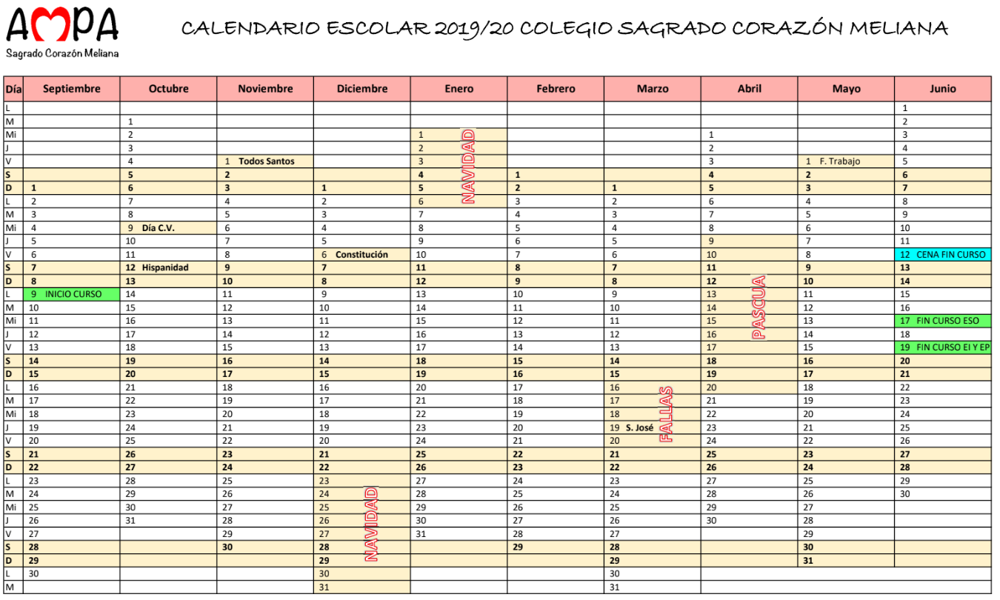
Hacia el nuevo curso 2019-2020
Estimados padres y madres:
Finalizado el curso 2018-2019, vamos con fuerza a por el 2019-2020, un curso nuevo en el que vamos a seguir innovando.
Debido a la implantación de la "Xarxa de Llibres", desde hace tres cursos, se han visto reducidos los ingresos que recibe el AMPA, pero hemos dado los mismos servicios a nuestros asociados y alumnos del Centro gracias a que vuestra respuesta es MUY MAYORITARIA, al comprar los libros en la Asociación y al pagar las cuotas del AMPA establecidas durante el curso.
Por nuestra parte, los miembros de La Junta: Negociamos el mejor precio con las editoriales, gestionamos cada uno de los recursos, no perdemos oportunidad de poder optar a cualquier subvención a nivel Ayuntamiento o cualquier otro Estamento. Aunque suponga mucha burocracia y mucha dedicación. Siempre son ingresos que directamente se destinan a nuestros hij@s, alumn@s del Centro.
PRESENTACIÓN CAMPAÑA LIBROS 2019-2020 "CONECTATE A NUESTRA WEB"
La reserva de libros se realizará desde el día 10 de Julio a través de la web. Ya la conoces del curso pasado, es muy intuitiva y sencilla, podéis encontrarlo en la sección de "APP libros"
Los días Miércoles 4 y Jueves 5 de Septiembre de 18:00 a 20:00 horas, será la retirada de libros.
A continuación, detallamos todos los pasos a seguir.
1) La reserva de libros se puede hacer a través de la web www.ampasagradocorazonmeliana.com EN SU APARTADO APP libros, desde el día 10 de Julio hasta el 15 de Agosto (todas las reservas posteriores a esta fecha, pueden sufrir retraso en la entrega de libros)
Al confirmar la reserva, se genera un "código reserva", y este código, junto con el nombre del alumno debe figurar con claridad al efectuar el pago de los libros.
2) Ingresar mediante transferencia bancaria o en efectivo, en el cajero de la oficina, en la cuenta de la CAIXA POPULAR a nombre del AMPA SAGRADO CORAZON MELIANA ES98-3159-0017-76-2256004827.
El plazo máximo para tener efectuado el ingreso del pedido y la cuota de AMPA, será el 30 de Agosto inclusive.
La cuota del AMPA asciende a 25€, el primer hijo matriculado y 5€ más por hijo si la familia tiene otros hijos matriculados. Realizando el ingreso a nombre del hijo mayor matriculado
El material de TECNOLOGIA de los cursos de ESO, se abonará en efectivo en el Centro los días de recogida de libros. Siendo el importe de 30 €.
Os recordamos que en diciembre y marzo pasaremos las cuotas de mantenimiento que ascienden a 20 euros por hijo matriculado.
Para cualquier duda o aclaración, no dudéis contactar personalmente con nosotros en: ampasagradocorazonmeliana@gmail.com,
Asamblea General Extraordinaria 5 Junio 2019 - 19:00
Convocamos a todos los asociados a la Asamblea General Extraordinaria que tendra lugar el miercoles dia 5 de Junio a las 19:00 horas en el hall de la entrada del Colegio, con el siguiente orden del dia:
En la primera parte Formacion. Ponencia: "Acoso escolar. Que es y que podemos hacer para prevenirlo"
Ponente: D. David Morro Cuenca, abogado, pertenece al Cuerpo de Policia Portuaria de Valencia
En la segunda parte, a las 19:45 en primera convocatoria y a las 20:15 horas en segunda convocatoria se realizara la Asamblea, con el siguiente orden:
- Cena fin de curso.
- Ruegos preguntas.
Esperamos poder contar con vuestra presencia
Actividad de la ONG Proyso, Sábado 4 de Abril 2019
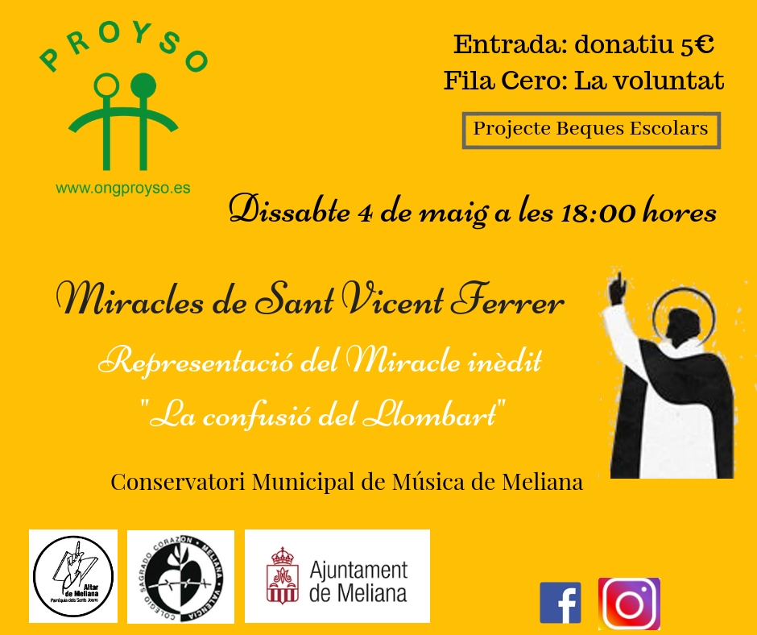
Campaña #yoelijo 2019 sobre la libertad en la enseñanza
Podéis descargar el documento informativo en PDF aquí
Fallas 2019
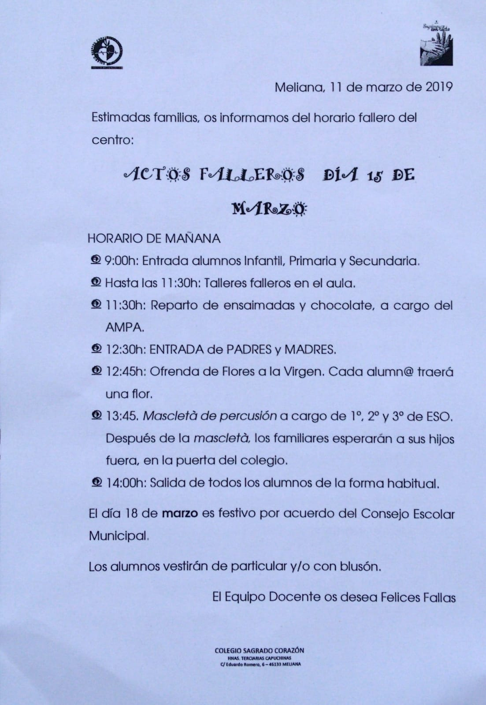
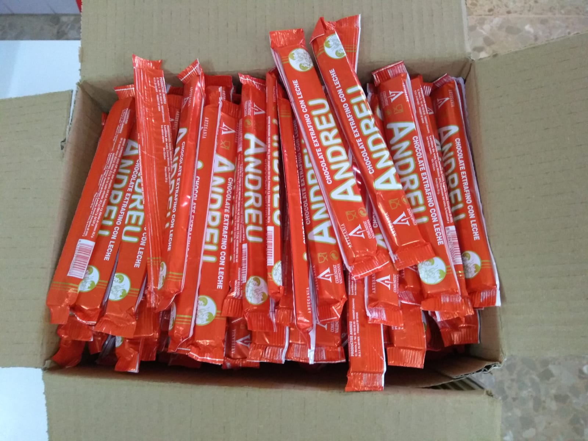
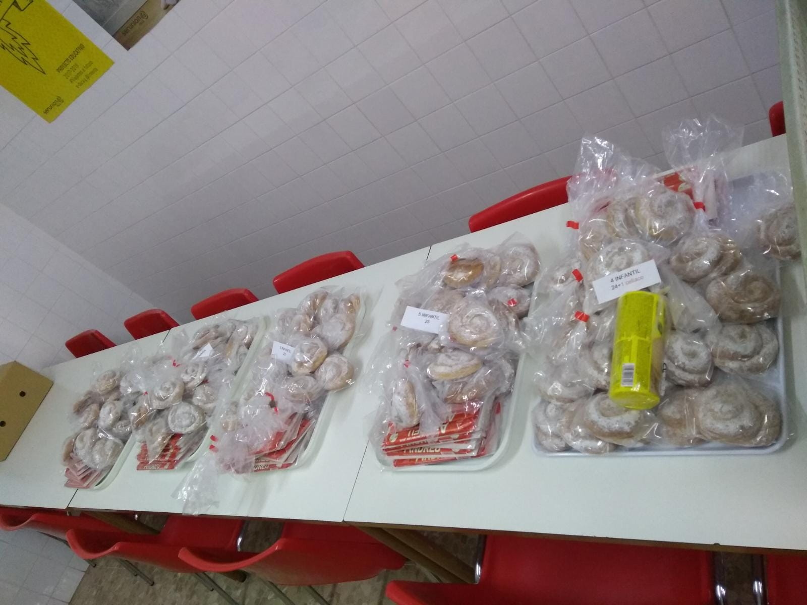
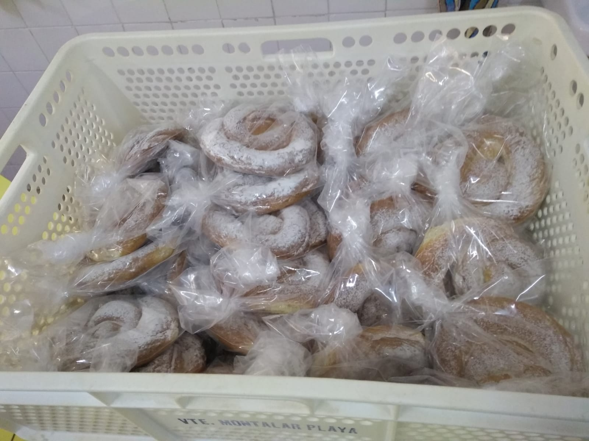
Asamblea general Diciembre 2018
El 12/12/2018 se lleva a cabo una Asamblea general y Ponencia "Bases para una correcta alimantación". Aquí el comunicado en PDF
¡FELIZ DÍA DEL MAESTRO!
Hoy se celebra el Día Internacional del Maestro y, por ello, y en línea con el proyecto del centro "Vida Saludable", hemos querido celebrar con los profesores de nuestros hijos este acontecimiento, agradeciendo de esta manera la labor que desarrollan.
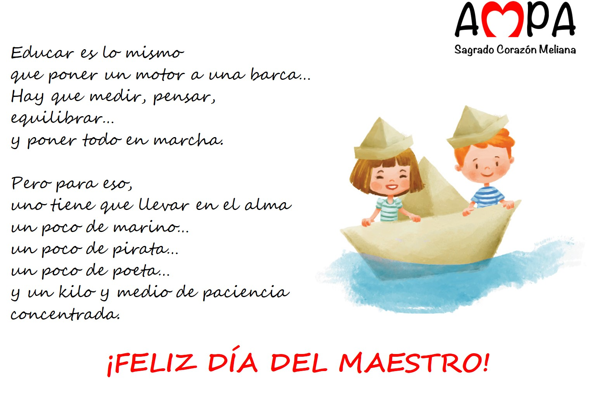 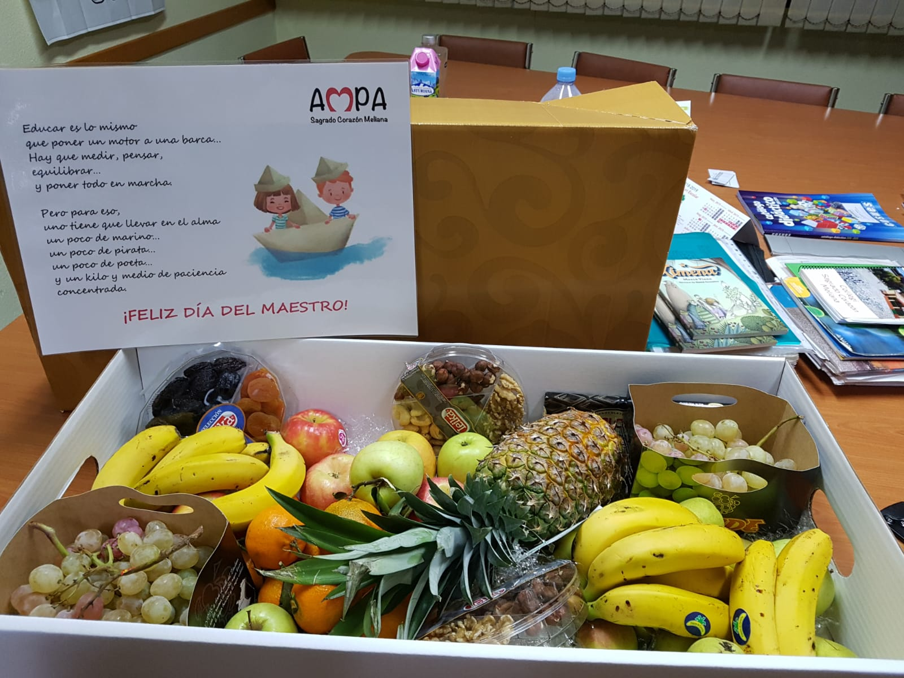{kind=link}
{kind=link}
COMUNICACIÓN DEL COLEGIO SOBRE EL UNIFORME DEPORTIVO
El colegio ha emitido un comunicado sobre la situación del nuevo uniforme deportivo. Lo podéis obtener aquí.
El texto dice:
Meliana, 3 de septiembre 2018 Estimadas familias, Nos ponemos en comunicación con vosotros por la situación que ha generado el tema del uniforme deportivo, invierno-verano del Colegio. No estaba previsto, ni era nuestra intención que fuese para este curso, lo hubiésemos comunicado en tiempo y forma, pero ante la falta de existencias del que actualmente tenemos, se ha determinado la incorporación del nuevo modelo de uniforme para educación física. Así pues, os comunicamos la incorporación del nuevo equipo de educación física para este curso escolar 2018-19 en el que serán aceptados los dos modelos. Tenemos la esperanza que para el próximo curso 2019-20 ya sea una realidad. El proyecto se creó con la intención de que todos los colegios de las Hermanas Terciarias Capuchinas de España adapten este nuevo modelo identificado con logo institucional. Esperamos disculpéis las molestias que esta modificación haya podido ocasionar. Atentamente, La dirección
Presentación AMPA 2018
Aquí podéis descargar la presentación del AMPA para el curso 2018-2019. Descargar
INSTRUCCIONES PARA LA RESERVA Y POSTERIOR RECOGIDA DE LIBROS DE TEXTO
Reserva de libros
Se realizará a través de la web, desde el día 25 de junio hasta el 15 de julio. Todas las reservas realizadas con posterioridad a esta fecha pueden sufrir retraso en la entrega de libros.
Para quien no disponga de medios, el día 9 de julio de 18:00 a 20:00 h se habilitará ordenadores en el Centro para efectuar la reserva.
Al confirmar la reserva se genera un “código de reserva” el cual debe figurar con claridad, junto al nombre del alumno, al efectuar el pago de los libros.
Nota: El material de Tecnología de los cursos de ESO se abonará en efectivo en el Centro los días de recogida de libros, siendo el importe de 30€.
Cuota del AMPA
La cuota del AMPA asciende a 25€ el primer hijo matriculado y 5€ más si la familia tiene otros hijos matriculados, realizando el ingreso a nombre del hijo mayor matriculado.
Os recordamos que en diciembre y marzo pasaremos las cuotas de mantenimiento que ascienden a 20 euros por hijo matriculado.
Pago de libros y cuota AMPA
Transferencia bancaria o en efectivo en la cuenta que, a tal fin, tiene el AMPA:
Entidad: Caixa Popular.
Titular: AMPA SAGRADO CORAZÓN MELIANA
C/C: ES98-3159-0017-76-2256004827
EL PLAZO MÁXIMO PARA TENER EFECTUADO EL INGRESO DEL PEDIDO Y DE LA CUOTA DE AMPA SERÁ EL 30 DE AGOSTO (INCLUSIVE).
RECOGIDA DE LIBROS DE TEXTO
Los libros se recogerán en el Centro los días miércoles 5 y jueves 6 de septiembre, de 18:00 a 20:00h.
Comunicación del Ayuntamiento para mejorar habilidades parentales de comunicación
La Unidad de Prevención Comunitaria de Conductas Adictivas (UPCCA) del Ayuntamiento continua ofreciendo este año formación dirigida a padres y madres sobre como reforzar o mejorar habilidades parentales. Conscientes de las dificultades que existen a la hora de asistir de forma presencial a estos cursos, adjuntamos estos contenidos donde de aborda y muestran estrategias para mejorar la comunicación con l@s hij@s, facilitando así un clima de confianza como base de las relaciones familiares.
Fotos de la cena de fin de curso 2018
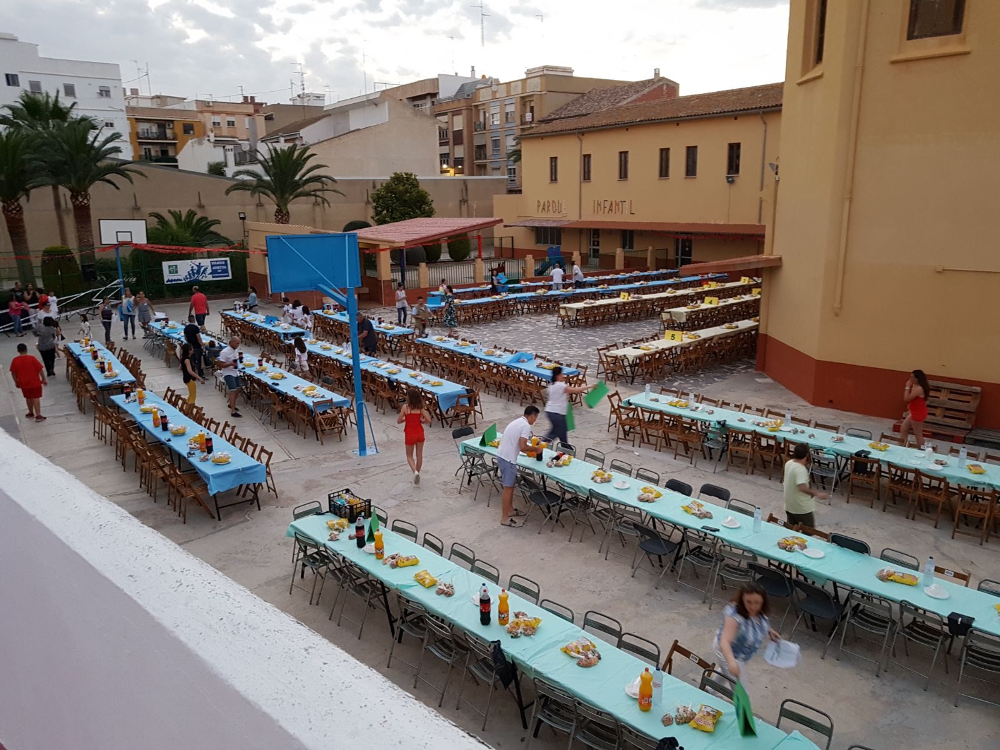 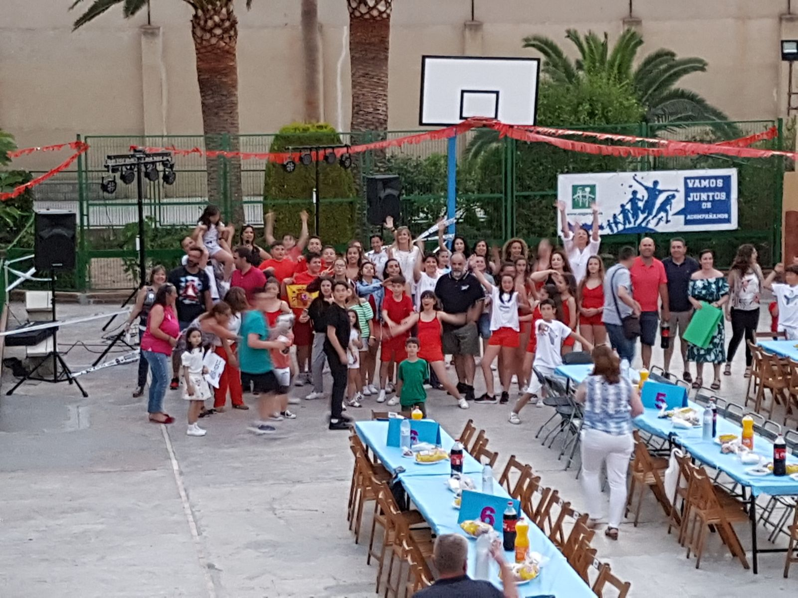 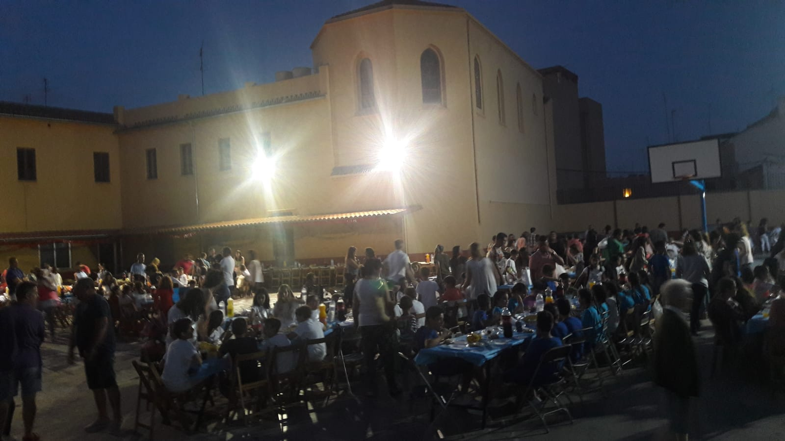 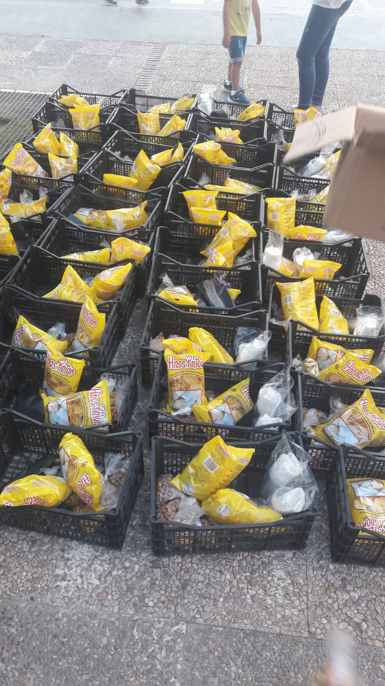 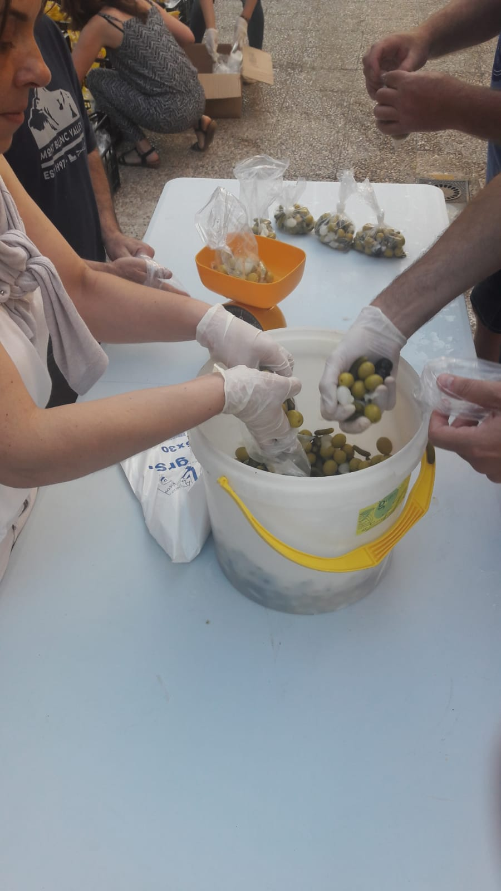{kind=link}
{kind=link}
{kind=link}
{kind=link}
{kind=link}
RESERVA LIBROS AMPA
El próximo lunes 9 de julio, de 18 a 20h, estaremos en el colegio para quien quiera realizar desde allí la reserva de libros a través de la aplicación con ordenadores proporcionados por el Centro. También se resolverán dudas sobre la aplicación y/o reservas.
Circular de fin de curso 2018
El colegio ha publicado una circular de fin de curso con calendario de actos. La podéis descargar en formato PDF
AVISO IMPORTANTE ORGANIZACIóN CENA FIN D CURSO 15 JUNIO
Con el fin de mejorar la organizacion de la cena de fin de curso, este año vamos a establecer algunos cambios que creemos que son necesarios para el bien común.
Una vez finalizado el festival para evitar las aglomeraciones y esperas innecesarias en la puerta vamos a organizarlo de la siguiente manera:
Nos tendremos que apuntar en un listado, nos apuntaremos por familias diciendo cuántos somos por unidad familiar y en qué curso queremos sentarnos. Independientemente de que cada uno de nuestros hijos este en una mesa, pero hemos de indicarlo con el mismo nombre en cada lista.
Ejemplo, nosotros somos 4 pero no estaremos todos en la misma mesa...
LISTA 1 DE ESO- Inma Ruiz 2+1alumno
- Inma Ruiz 1 alumno
Los días para apuntarse serán el 28, 29, 30 y 31 de mayo de 9.30h a 10.30h y de 15.00h a 16.30h
Una persona puede apuntar a varias familias, si no podéis acercaros.
El fin de esta nueva organización es garantizar que todo el mundo tenga su sitio reservado.
Una vez finalizado el festival se abandonará de inmediato el patio para que podamos montar las mesas con rapidez, solicitamos de cada clase uno o dos voluntarios para que se queden y ayuden en esta labor
Cualquier duda nos preguntéis
Un saludo
AMPA
Aplicación de reserva de libros para el curso 2018-2019
 Este año podéis reservar los libros de los alumnos del colegio a través de una sencilla aplicación web. Al entrar podéis elegir el curso y los libros a reservar, después debéis introducir
los datos del alumno, madre y/o padre.
Este año podéis reservar los libros de los alumnos del colegio a través de una sencilla aplicación web. Al entrar podéis elegir el curso y los libros a reservar, después debéis introducir
los datos del alumno, madre y/o padre.
El DNI junto con el móvil que introduzcáis os permitirá consultar más tarde la reserva.
Reserva ahora
Aplicación de reserva de libros para el curso 2019-2020
Este año podéis reservar los libros de los alumnos del colegio a través de una sencilla aplicación web. Al entrar podéis elegir el curso y los libros a reservar, después debéis introducir
los datos del alumno, madre y/o padre.
El DNI junto con el móvil que introduzcáis os permitirá consultar más tarde la reserva.
Reserva ahora
ENLACES DE INTERÉS
Colegio Sagrado Corazón de Meliana
https://www.sagradocorazonmeliana.comAyuntamiento de Meliana
http://www.meliana.es/Instituto Municipal de Cultura de Meliana
http://www.imcmeliana.com/Quiénes somos
La AMPA, o lo que es lo mismo, Asociación de Padres y Madres de Alumnos, es una organización sin ánimo de lucro, formada por padres, madres o tutores del alumnado del Colegio Sagrado Corazón de Meliana, que deciden inscribirse voluntariamente y pagar una cuota periódica.
Una vez hecha la inscripción, se forma parte del AMPA hasta que finaliza la etapa escolar, o bien, hasta que se decida darse de baja por cualquier motivo.
Acciones llevadas a cabo por el AMPA:
Informativas: Las AMPA establecen vías de información entre el propio centro y las familias, utilizando para ello todos los recursos necesarios. Incluso estamos viendo una predilección por las nuevas tecnologías para crear un canal comunicativo eficaz. Esta información que se proporciona es relativa a la organización, legislación, instrucciones sobre cómo se desarrolla el curso, funcionamiento del consejo escolar, actividades, …
Formativas: Otra de las funciones principales de esta asociación es la de formar a las familias en los criterios educativos, evolución de sus hijos y proyectos que se desarrollan tanto en el centro como en la etapa educativa en general. Es decir, que el AMPA trata de involucrar a los padres y madres en todo lo relativo a la educación de los alumnos.
Las funciones del Ampa, entre otras son:
- Favorecer la relación y coordinación entre las familias y el personal docente.
- Trabajar para mejorar la participación y el compromiso de los padres, hijos y de la sociedad en general, y de la educativa en particular.
- Gestionar la adquisición de libros de texto.
- Organizar y colaborar en actividades formativas, tales como charlas, semana cultural, fiesta fin de curso etc., que favorecen la educación de nuestros hijos y facilitan el conocimiento y la relación entre las familias.
No es obligatorio formar parte del AMPA, pero sí recomendable.
Estatutos del AMPA
Puedes descargar los estatutos en PDF pinchando aquí
Ponencia 09/05/18: "Educar en el uso de las redes sociales".
Ponente: D. Fernando Chust Piles, Socio de Educadigital.es, Consultoría sobre temas de estrategia, tecnologías, comunicación y formación para el sector educativo. Miembro de la Junta Directiva de la Asociación PREF, dedicada a la orientación familiar y matrimonial.
En formatoPDF
En video, en varias partes:
Asociación de madres y padres de alumnos
Colegio Sagrado Corazón de Meliana
C/Eduardo Romero, 6. 46133-Meliana
E-Mail: ampasagradocorazonmeliana@gmail.com
Colegio Sagrado Corazón de Meliana
C/Eduardo Romero, 6. 46133-Meliana
E-Mail: ampasagradocorazonmeliana@gmail.com